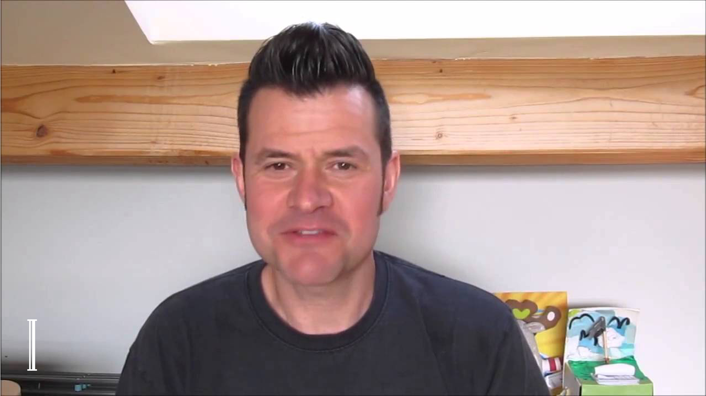
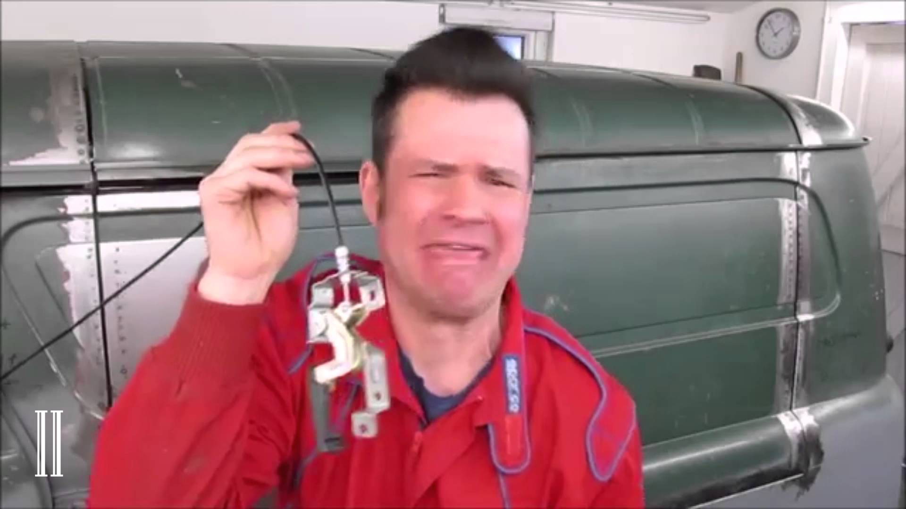
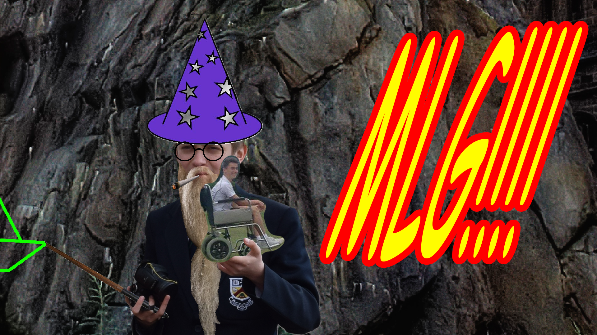
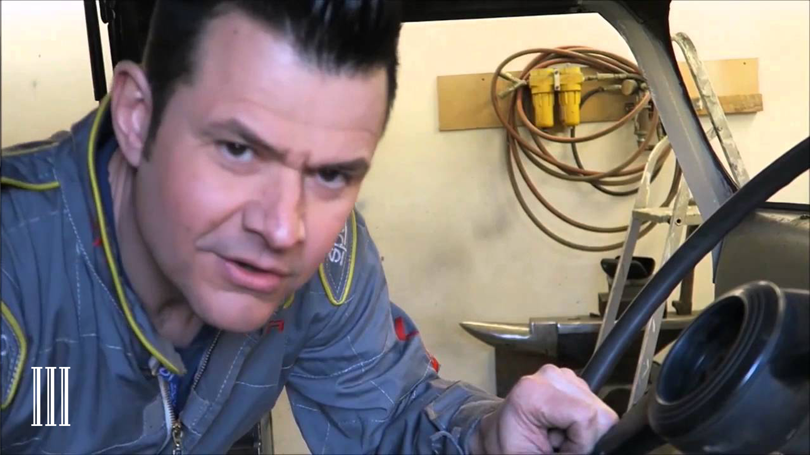
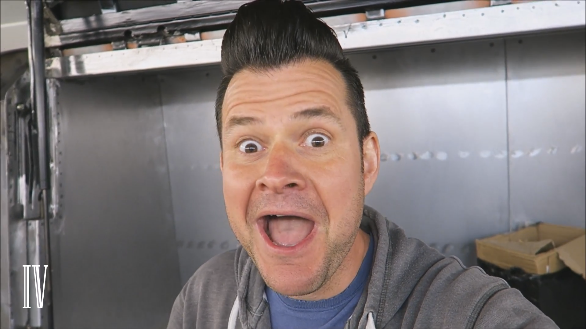
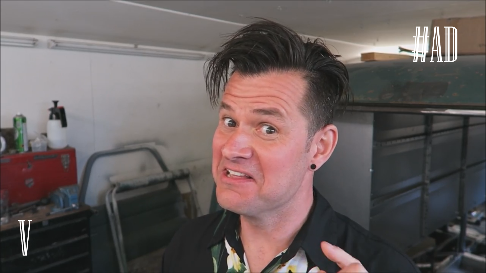

HatRaps Studios is my youtube channel. Most of the videos on it are "YouTube Poops" of the famous vlogger Trevor Hatton, the infamous TrevRaps series.
Here's a list of all the videos with some BTS info.
| [YTP] TrevRaps I - The Phantom Trev  |
This original masterpiece, was inspired by such hit artists as Cassette Boy and David Cameron. It was originally uploaded to the Rusty Biscuit YouTube channel, but when it was taken down, I made the official HatRaps Studios. |
| [YTP] TrevRaps II - Trev Harder  |
Another classic. This is considered by many to be the golden age of TrevRaps, with such hits as "Cable Guy!" This episode marked a clear turning point in the development of TrevRaps, and had a large part to play in its success. |
| MLG COMPILATION  |
This video is a departure from TrevRaps, and contains classic scenes like "Weed Dance" and memorale characters, such as "Wheelchairtard", "Dynatrev" and "Polish Wizaard" and gueststarring Ethan Bradbury. |
| [YTP] TrevRaps III - Bobby's Holly  |
In "Bobby's Holly" we meet Trev's apprentice, Bobby. This episode features more visual effects than previous installments, and also has more copyrighted music than any previous TrevRaps. |
| [YTP] TrevRaps IV - Catering Condoms  |
One of the most technical, explaining how Trev's icecream van will work - "I won't be stood inside the van serving customers outside the van, I'll be stood outside the van serving customers inside the van." - NUTS. |
| [YTP] TrevRaps V - Thomas the Tank...  |
This episode was sponsored by the good folks over at TG Enterprise, a fantastic business set up by one, incredibly entrepunerial, man, Tommy G. This episode starts season 2, a brand new take on Trev's Bedford catering van restoration. |